Практичний досвід · журнал «ДентАрт» 2021 №2
Збереження зубних тканин при стертості зубів. Повний mock-up і цифровий підхід
PRESERVATION OF TOOTH TISSUES IN THE WORN DENTITION. FULL MOCK UP AND DIGITAL APPROACH
Належне (ультраконсервативне) лікування стертого зубного ряду – одне зі складних завдань повсякденної стоматологічної практики. Збільшення висоти прикусу при такій реабілітації потрібне, щоб відновити морфологію оклюзійної поверхні зношених зубів, використовуючи найменш інвазивне препарування, і скорегувати лінію усмішки з використанням шару реставраційного матеріалу достатньої товщини. Так лікар і технік зможуть діяти більш вільно, щоб відновити оклюзійну гармонію, поліпшити прикус, зменшити навантаження на м'язи і одночасно створити достатньо великий міжоклюзійний простір, що дозволяє відновити належне переднє ведення і відкоригувати оклюзійну анатомію.
Щоб провести таке лікування, лікар має зафіксувати багато параметрів з використанням лицьової дуги, відтисків, матеріалу для реєстрації прикусу і т. ін. Це знадобиться технікові, щоб відновити зубний ряд з урахуванням ідеального міжоклюзійного простору.
У цій статті ми розповімо про швидший і безпечніший спосіб. Modjaw – це новий пристрій для точної реєстрації рухів нижньої щелепи і контактних точок. Його основою є особливо точний процес відстеження положення обох щелеп. Процедура збільшення висоти прикусу безпечна. Більшість здорових пацієнтів її витримують добре.
У більшості випадків відновити ідеальну морфологію і отримати оптимальні естетичні результати з мінімальним препарування було б майже неможливо без зміни висоти прикусу. Це потрібно для створення естетичного та функціонального проєкту майбутніх реставрацій. Тобто від висоти простору, потрібного для відновлення зубного ряду, залежатиме нова висота прикусу пацієнта, і так технік отримає всі необхідні дані. У цій статті мова піде про застосування непрямого підходу для лікування стертого зубного ряду у молодих пацієнтів у техніці повного mock-up, створеного з використанням нового цифрового пристрою.
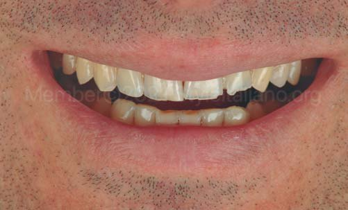
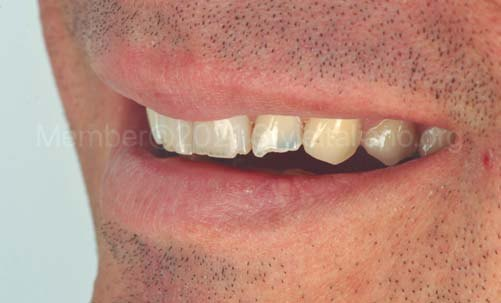
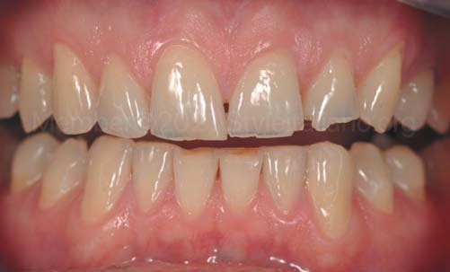
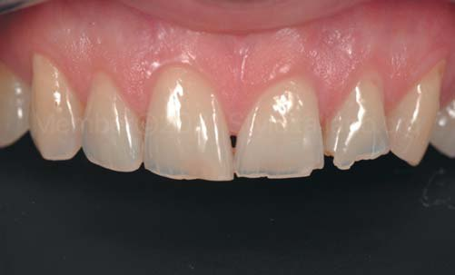
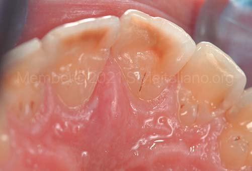
![На оклюзійній поверхні жувальних зубів майже вся емаль відсутня, і дентин був відкритий. Чашоподібні дефекти горбиків мають типовий малюнок для ерозованих поверхонь зубів. Перед тим, як почати лікування, потрібно було замінити деякі композитні пломби, щоб створити оклюзійні вініри ідеальної форми та однорідної товщини. План лікування у таких випадках буде зовсім нескладно підготувати і скоригувати під іншого пацієнта відповідно до того, які зуби стерті. Для відновлення верхньої і нижньої зубних дуг будуть спеціально виготовлені піднебінні, оклюзійні і щічні вініри.](images/kub2-006.jpg)
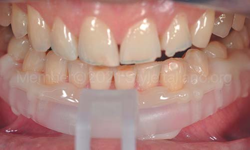
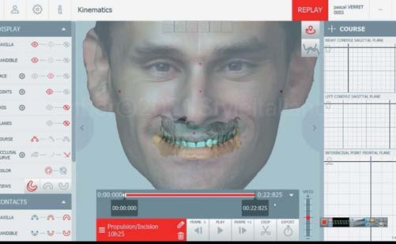
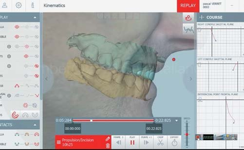
Потім у програмі exocad буде створено цифровий wax-up.
Коли віртуальна модель виготовлена, найскладнішим завданням для стоматолога стає її перенесення всередину ротової порожнини без деформації. Одним зі способів це зробити є використання силіконового ключа, але це може призвести до помітної зміни форми поверхні композиту під час його введення в ротову порожнину і в процесі затвердіння. Інший варіант – надрукувати композитний шаблон і потім скорегувати його за допомогою рідкого силікону Honigum Light (DMG, Hamburg), який здатний створювати опір у ротовій порожнині і завдяки своїй пружності не створює поршневого ефекту, як звичайний силікон.
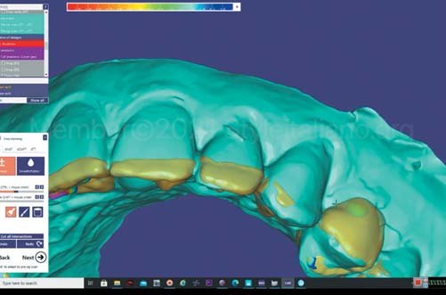
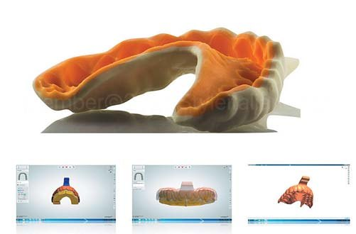
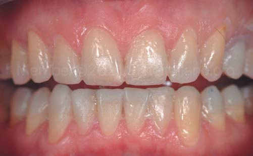
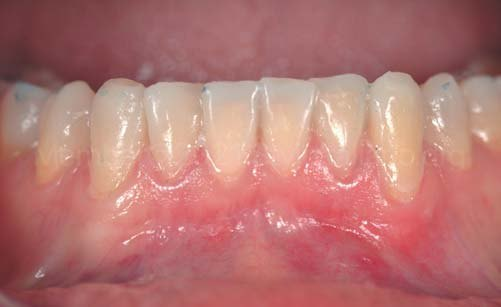
Коли цифровий wax-up був готовий, ми переслали файли в форматі .stl на принтер, щоб роздрукувати моделі верхньої і нижньої дуг. Потім робиться перебазування обох шаблонів, надрукованих на 3D-принтері, рідким силіконом, після чого їх заповнюють композитом LuxaCrown (DMG, Hamburg), який видавлюється зі шприца. Після 30 секунд затвердіння зайвий матеріал із пришийкової зони буде видалено. Щоб матеріал досяг високої полімеризаційної конверсії і мав ліпші механічні властивості, потрібні ще 3 хвилини.
Щоб спростити протокол і полегшити техніку відновлення зношеного зубного ряду, 10 років тому було запропоновано впровадити цей дуже важливий етап – створення повного mock-up. Оскільки цей матеріал має першокласні механічні властивості, іноді пацієнтам пропонують поносити повний mock-up протягом тривалого терміну (1-2 місяці), щоб перевірити конструкцію. Раніше ми користувалися біс-акриловими композитами, але надовго (тобто на 1-3 місяці) їх не вистачало. Ось чому LuxaCrown значно краще підходить для виготовлення таких тимчасових довгострокових реставрацій.
Перевагами цього матеріалу в шприці є:
- зручність при використанні (легко видавлюється зі шприца);
- високоестетичний вигляд реставрації;
- високі механічні показники, необхідні на етапі випробування новою висотою.
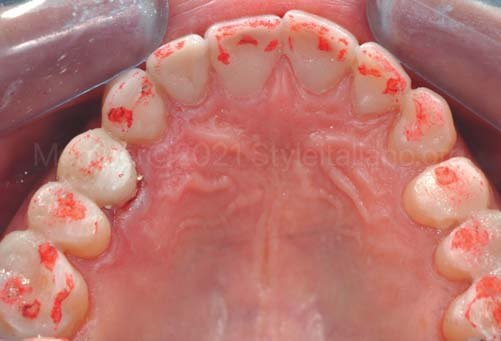
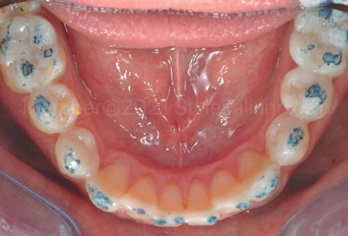
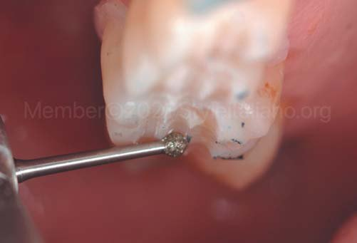
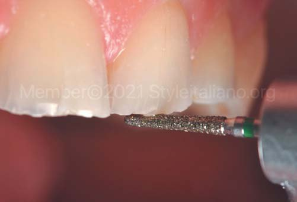
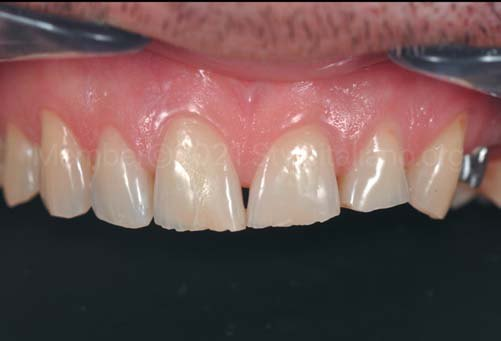
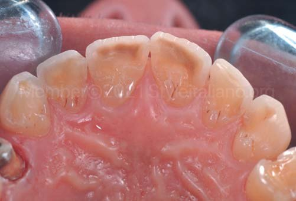
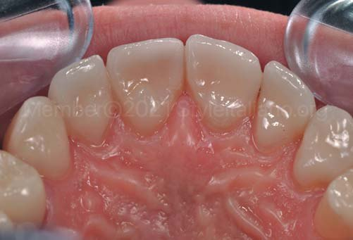
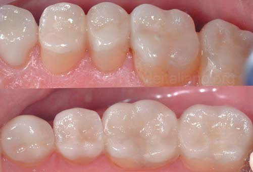
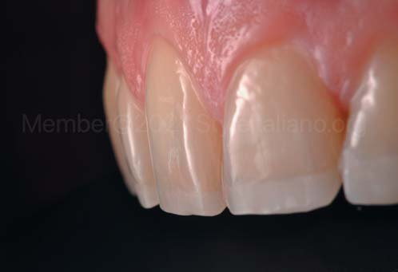
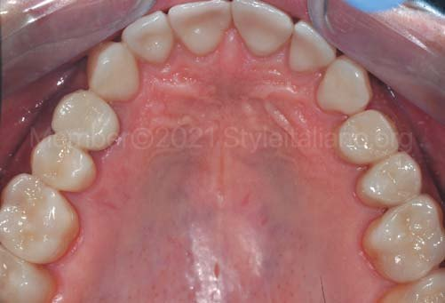
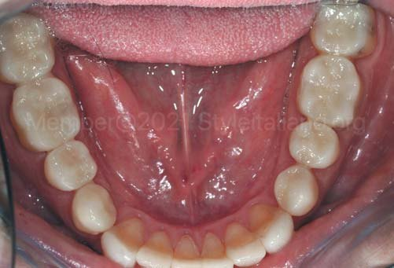
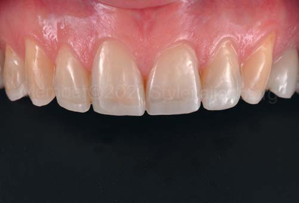
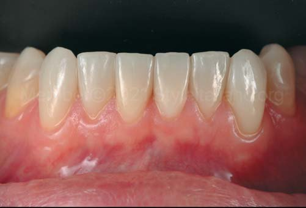
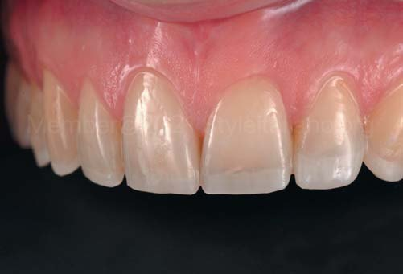
Висновки
Сьогодні, коли в нашому арсеналі є адгезиви, дуже важливо зберігати природні тканини. На жаль, багато лікарів про це часто забувають або через технічні складнощі, брак часу чи недостатньо високу кваліфікацію ігнорують строгі правила мінімально інвазивного препарування зубів і виготовлення незнімних протезів. Відновлення зношених зубів у молодих пацієнтів вимагає від лікарів достатньої підготовки. Однак завдяки властивостям сучасних матеріалів такі пацієнти можуть пройти реабілітацію з мінімальною втратою природних зубних тканин.
Лікувати пацієнта за мінімально інвазивною методикою і отримати гарний естетичний і функціональний результат складно, але можливо. До того ж, такі цифрові пристрої, як Modjaw, можуть стати в пригоді як лікарям, так і зубним технікам, щоб ідеально зімітувати рухи щелеп, а потім отримати точний та індивідуалізований повний mock-up і перетворити його на готову реставрацію, яку після адгезивної фіксації майже не потрібно буде коригувати.
Якщо потрібно збільшити висоту прикусу більш ніж на 5 мм, рекомендується дати пацієнтові поносити нові конструкції кілька тижнів, доки він не буде відчувати себе з ними комфортно і доки не зникнуть клінічні прояви. Так пацієнт зможе звикнути до конструкцій і перевірити їх функціональність. Ця мінімалістична техніка застосовується для того, щоб зробити протокол простішим для лікаря-стоматолога і дати йому чіткі вказівки, адже так лікування буде можливим, а результати можна буде відтворити і спрогнозувати.
Зубний технік Hilal Kuday (Бодрум, Туреччина).
Література
- Koubi S., Gurel G., Margossian P., Massihi R., Tassery H. Aspects cliniques et biomécaniques des restaurations partielles collées dans le traitement de l'usure: Les table top. Réal Clin 2014; 25 (4): 327-336.
- Koubi S., Gurel G., Margossian P., Massihi R., Tassery H. A Simplified Approach for Restoration of Worn Dentition Using the Full Mock-up Concept: Clinical Case Reports. Int J Periodontics Restorative Dent. 2018 Mar/Apr; 38(2): 189-197.
- Vailati F., Belser U. Full month adhesive rehabilitation of a severely eroded dentition: 3 step technique part 2. Eur J Esthet Dent. 2008 Summer; 3(2): 128-146.